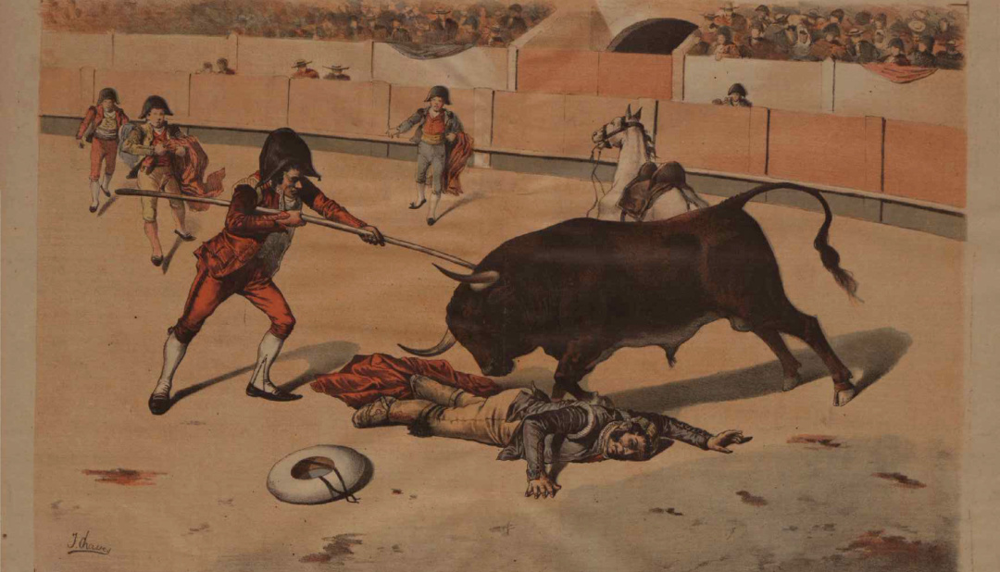

chapter15.3--handout
Background Information
Amphitheatre 斗牛场
现在西班牙拥有300多家斗牛场，其国内的许多重要城市都设有圆形的斗牛竞技场，建筑物突显宏伟壮丽，占地面积极广，足可容纳上万人，其中最大的是马德里的拉斯文塔斯斗牛场，可容纳2.5万人。
斗牛场格局和古罗马的斗兽场相仿，一般都为露天的竞技场，四周是水泥台阶的观众席。向阳的座位门票较便宜，而太阳照射不到的座位较贵些。椭圆形的竞技场中央为斗牛场地，表面薄薄地铺着均匀的黄沙，斗牛士与牛的搏命拼斗便在这个区域上演。
斗牛场地周围设有2米高的厚木板墙栏、通道，使之与观众席隔开。四面则有可随时启闭的门，以控制人兽的出入。门与围墙之间有较宽的缝隙，当斗牛场面不能为人所控制时，斗牛士可以暂时躲进这里，以避开牛的锋芒，避免不必要的受伤。在主席台的正对面和左面的观众席最上方，各有一支铜管乐队，他们指挥和调控着整个斗牛的程序。
Procedure of bullfight 斗牛过程
一场斗牛由三个斗牛士出场，共斗六条公牛，每人两个回合。整个斗牛过程包括引逗、长矛穿刺、上花镖及正式斗杀四个部分。
其中最重要的两个角色分别是长矛手和主斗牛士（Romero是主斗牛士的身份，在明天的内容里会有他的精彩表演）——
其中的长矛手picador是西班牙斗牛中一对用长矛刺公牛的骑手之一。他们的目的首先是刺穿公牛脖子后面的肌肉（pierce the muscle），以使公牛的冲锋变直。当公牛试图用头抬起马时，使公牛的颈部肌肉和一般耐力疲劳为下一阶段做准备，降低公牛的头。
主斗牛士matador是整场斗牛的主角，也是全场氛围的主导者。除了一些常规动作，他还会使用一些冒险刺激的方法。例如，双膝跪地，手持红布，让牛擦身而过，每每场内出现这样的场景，就会引起一次高分贝的惊呼，最后一手握着有柄红巾，一手持剑，伺机直刺公牛心脏，将它杀死。

Vocabulary
monastic
adj. 僧侣的，修道院的（relating to monk s or life in a monastery）
宁静简朴的；清修的；禁欲的（similar to a monk ’s way of living, for example quiet, simple, or not having sex）
原文：There were two beds separated by a monastic partition.
有两张床，用一扇修道院用的隔板隔开。
💧monastery 指“修道院”，monastic是形容词形式，monastic lifestyle即指“（像僧侣一样）简朴清修的生活”，比如：She set her things round the monastic student bedroom.
她把自己的物品放在简陋的学生宿舍里。
hanger-on
n. 食客随从；依附他人者，奉迎者（a person who tries to be friendly with a famous person or who goes to important events, in order to get some advantage）
原文：He was standing, straight and handsome and altogether by himself, alone in the room with the hangers-on as we shut the door.
我们带上门的时候，他仍然站着，挺直而潇洒，孑然一身，独自同几名帮闲的待在屋里。
💧hanger-on 在这里指服侍他的随从，此外因为hang on 有“守住，紧紧抓住”的意思，所以hanger-on也可以理解为“总是依附、攀附别人的人”，比如：For every one or two talented people in any group of artists, there are hordes of talentless hangers-on.
在任何一个艺术家圈子里，每一两位有才华的人身边儿总会有一帮无能的阿谀奉承者。
Crush Your Problems

Of the other two matadors, one was very fair and the other was passable.
至于另外两名斗牛士，一个很普通，另一个还算是过得去。
💧表达精讲
①fair 除了表示“公平的”，还可以像在这里一样指“一般的”（average in standard or quality）, 也就是不好也不坏（neither good nor bad）. 比如：Reimar had a fair command of English.（赖马尔具备一般的英语水平。）
②passable 表示“尚可的，但仍然不优秀”（fairly good but not excellent）. 比如：He can do a passable imitation of the maths teacher.（他模仿数学老师还真有点像。）


We could not make our way through but had to be moved with the whole thing, slowly, as a glacier, back to town.
我们挤不出去，只好随着整个人流像冰川一样缓慢地向城里移动。
💧表达精讲
①make one's way 表示“行进”，尤指很艰难或路途遥远的那种（to go towards something, especially when this is difficult or takes a long time）, 后面可以加上介词to/through/towards. 比如：The team slowly made their way back to base.（球队慢慢地返回基地。）
②the whole thing 在这里就是指the crowd “人潮，人流”；
③as a glacier 这个比喻也很有意思，“像冰川一样”，这个要联系到冰川本身的特质，在一般情况下它就是处于不断缓慢移动的状态中的（a glacier is an extremely large mass of ice which moves very slowly, often down a mountain valley）, 正好贴合这里对人流几乎一动不动的形容。

We had that disturbed emotional feeling that always comes after a bull-fight, and the feeling of elation that comes after a good bullfight.
我们的心情忐忑不安，就像每次看完斗牛一样，同时又很振奋，像平时看完一场精彩的斗牛一样。
💧表达精讲
Jake之所以说他们会感觉disturbed（worried or anxious）是因为斗牛比赛里有很残忍的部分（长矛手骑的马会被斗牛攻击致死）；而矛盾之处在于他们同时还会因为比赛的精彩（比如斗牛手和斗牛的对抗）而情绪高昂（the feeling of elation）, elation就是指great happiness and excitement “欢欣鼓舞”。

The drums pounded and the pipe music was shrill, and everywhere the flow of the crowd was broken by patches of dancers.
鼓声咚咚，笛声尖冲破利，一伙伙起舞的人随处冲破人流，各占一方。
💧表达精讲
patches of dancers “一伙伙起舞的人”；patch本义是“补丁”，引申为“一块块的”，比如：Belinda watched a patch of sunlight move slowly across the wall.（贝琳达看着一小片阳光从墙的一边缓缓移到另一边。）

"They're not all the same," Bill said. "They dance differently to all the different tunes."
“这种舞蹈有各种跳法。”比尔说。“乐曲不一样，跳法也就不一样。”
💧表达精讲
dance differently to all the different tunes “跟着不同的曲调来跳舞”，to the tune of 就表示“根据……的曲调”，比如：The song was sung to the tune of “Amazing Grace”.（这首歌是用《奇异恩典》的曲调唱的。）
Content Analysis
在斗牛比赛开始前，酒馆老板Montoya特地带着Jake和Bill和一位即将在比赛中上场的斗牛士Romero见面。Montoya对他赞不绝口，而Jake对这位又年轻又帅气的斗牛士的惊叹也可以从字里行间体会出来——
💧Clue 1:Jake is much surprised at the appearance of Romero.
Evidence 1: Romero listened very seriously. Then he turned to me. He was the best-looking boy I have ever seen.
罗梅罗听得非常认真，然后朝我转过身来。他是我平生所见最漂亮的翩翩少年。
Evidence 2: "He's a fine boy, don't you think so?" Montoya asked.
"He's a good-looking kid," I said.
"He looks like a torero," Montoya said. "He has the type."
"He's a fine boy."
“他是个好小伙，你们说呢？”蒙托亚问。
“确实漂亮。”我说。
“他长得就像个斗牛士，”蒙托亚说。“他有斗牛士的风度。”
“他是个好小伙。”我说。
除了长相漂亮，Romero身上还有很吸引人的一点，Jake在两处细节都有提及，也就是他让人感觉十分疏远自持，比如他们H第一眼eRomero的时候，他只是回过头来稍微示意（Pedro Romero nodded, seeming very far away and dignified when we shook hands）. 最后离开的时候，他依然似乎只有自己在那儿似的，尽管旁边还有其他侍从，但他给人的感觉就是形单影只（He was standing, straight and handsome and altogether by himself, alone in the room with the hangers-on as we shut the door）.
并且事实证明，他在斗牛场上的表现也十分出色，另外两个斗牛手完全不能和他相比（But there was no comparison with Romero, although neither of his bulls was much）. 所以Jake形容他是一个“真正的斗牛士”（This was a real one. There had not been a real one for a long time）.
在比赛开始前，由于Brett和Cohn都是第一次看斗牛，其余的人便提醒到在公牛攻击马的时候尽量回避不看。随后Brett, Mike和Cohn一起坐在了位置比较高的地方（这样距离远点可以减少冲击），而Jake和Bill则坐在了第一排。期间，Jake一直用望远镜观察Brett的反应（Several times during the bull-fight I looked up at Mike and Brett and Cohn, with the glasses）, 单凭这个来看Brett似乎没有他原先所担心的不适——
💧Clue 2: Brett is pretty fine with the scene.
Evidence 1:"I'm a little nervy about it," Brett said. "I'm worried whether I'll be able to go through with it all right."
“我有点儿紧张。”勃莱特说。“我担心能不能好好地从头看到尾。”
Evidence 2:They seemed to be all right. Brett did not look upset. All three were leaning forward on the concrete railing in front of them.
他们似乎一切正常。勃莱特看来并没有受到困扰。他们三人都探着身子跃在前面的混凝土栏杆上。
Brett丝毫不畏惧斗牛的场面，这一点给Jake带来的可能是惊喜也可能是失望。而且Brett的真实反应和感受甚至会让Jake产生不安和嫉妒，尤其是在明天内容里会出现的第二场斗牛赛上，Jake会再次受到打击和折磨。
Today's Bonus
💧Misconceptions about animals 我们对动物都有什么误解？
今天的故事里斗牛赛就正式开始了。但大家对斗牛其实一直都有一个误解，比如斗牛士主要靠挥动一块大红布来激怒公牛。但生物学家爱研究后得出了一个完全相反的结论：牛会被激怒根本不是因为红色！我们来看看科学的解释——
1. Myth: Bulls can be aroused by the color red. 牛讨厌红色，红色会激怒它
事实就是，牛其实是色盲，所以不管斗牛士拿着什么颜色的布，只要晃动，都会对牛产生刺激，就会让它们向前冲。而使用红布的主要目的，反而是为了刺激在场的观众的情绪，让气氛能够激烈高昂，同时增大欢呼声也有利于斗牛士的发挥。
还有一个原因是，牛在事先就被关在牛栏里，牛栏比较狭小，用于斗牛的牛又是暴脾气，在山呼海啸般的浪潮中，只要放它出牛栏，它自然就是带着一股气冲出去，即便斗牛士是赤手空拳，也是会激发它的怨气的。
2. Myth: As blind as a bat! 像蝙蝠一样瞎
As blind as a bat 是一句英语里的谚语，意思就是“像瞎子一样”（比如：I’m as blind as a bat without my glasses. 我不戴眼镜就像瞎子一样）。
但事实上，蝙蝠不仅不瞎，白天的视力（daylight vision）可能比人类的还要好呢！比如它们的眼睛结构完整，视蛋白（眼部感光物质的主要组成部分）还会根据光线不同发生变化，这证明视觉对它们仍然很重要。某些种类的蝙蝠甚至还能看到大多数哺乳动物都看不到的波长较短的紫外线。

这个误解可能是最早的时候科学家做实验弄瞎了实验蝙蝠的眼睛，发现蝙蝠却依然可以敏捷飞行并且进行捕食后便一厢情愿地认为它们看不见。但蝙蝠只是习惯于依赖超声波（ultrasonic sounds）活动而已，这样即便在黑暗中它们也可以准确定位猎物（to locate their pary even in the dark）.
3. Myth: An ostrich will bury his head in sand when in danger. 鸵鸟遇到危险会把头埋在沙子里。
鸵鸟在英文里是ostrich, 这个词经常会被用来指“逃避现实的人”，这是因为人们误解鸵鸟在遇到危险的时候会把头埋在沙子里逃避：只要我看不到敌人，敌人就看不见我了（If I can't see the predator, it means that the predator cannot see me）！所以bury one's head in sand还变成了一个固定表达，专门用来调侃“逃避现实、掩耳盗铃”的这种行为。
但生物学家告诉我们，鸵鸟这种有着一流逃生技能的动物可不是这么躲避攻击的。鸵鸟的奔跑速度可以达到每小时70公里之快，跳跃的高度能达到3.5米之高，所以真遇上捕食者的追杀，它们完全可以靠“跑”的！况且，即便躲不开，它们也可以凭借着自己强有力的双腿和捕食者拼死一战。
至于鸵鸟为什么要把头埋进沙子里，可能只是因为它们在沙子里找东西而已（It could be simply exploring it）!